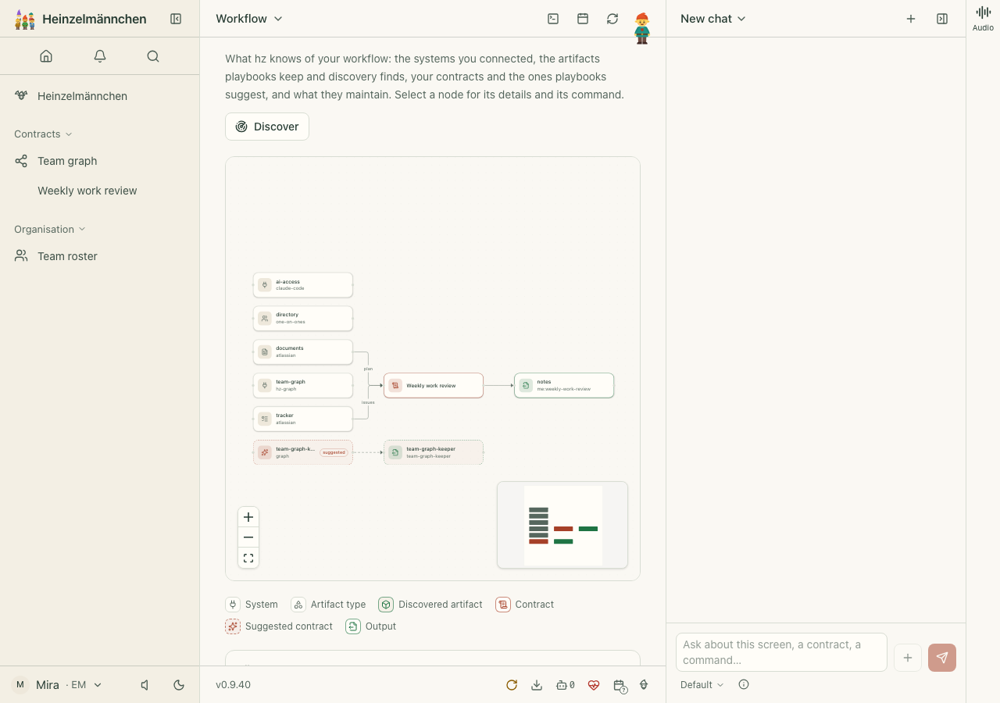
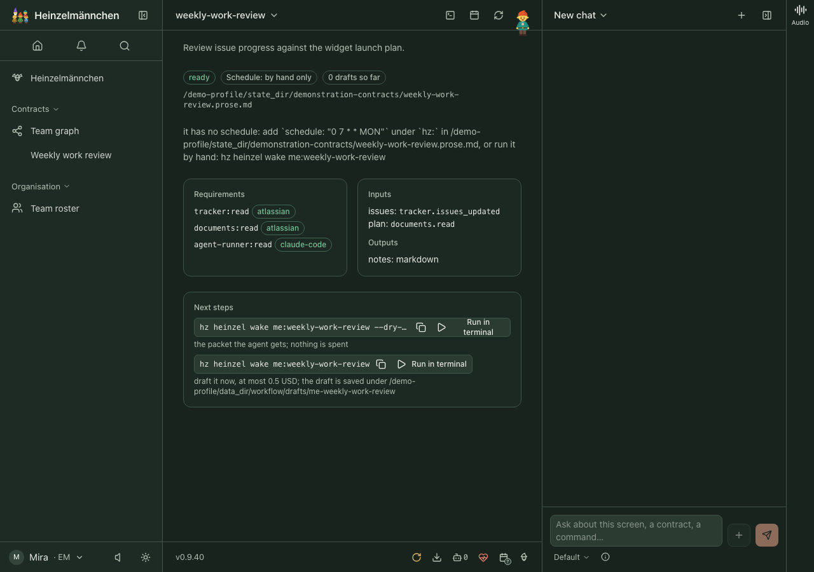
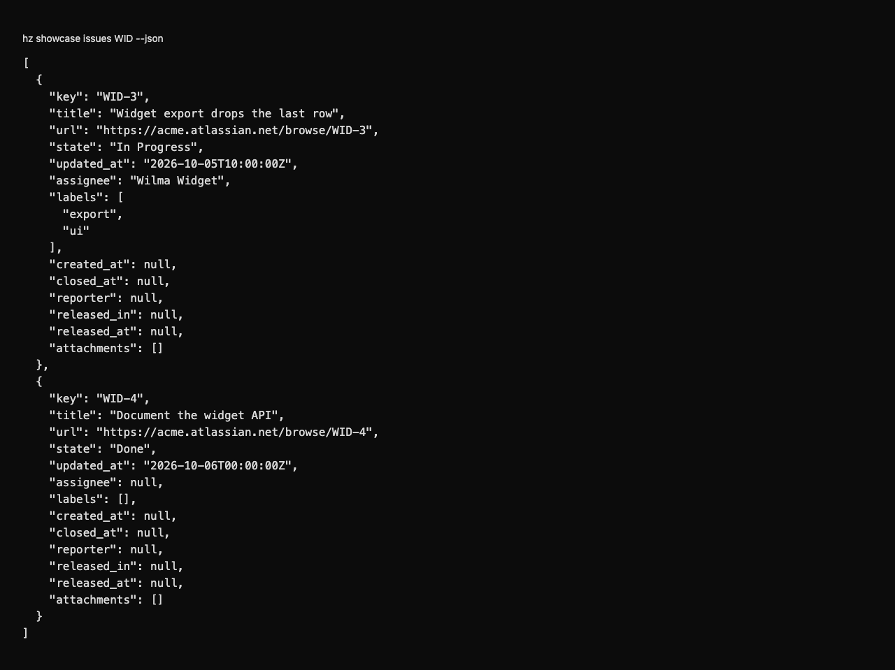
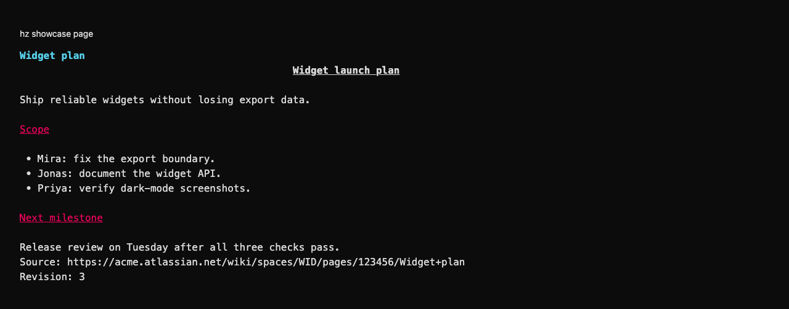

heinzel-atlassian
Isolated demonstration profile · Core 0.9.42 · Review these captures before committing. Click an image to inspect it at full size.

UI · Demo data: find the fictional Weekly work review among local contracts.
UI · Demo data: the local Weekly work review declares Jira and Confluence inputs; no report has been generated.
CLI · Demo data: structured fictional Jira changes through the real adapter, using a fixture-only requester and local vendor replies.
CLI · Demo data: the fictional Confluence plan, source and revision in the shell, using a fixture-only requester and local vendor replies.